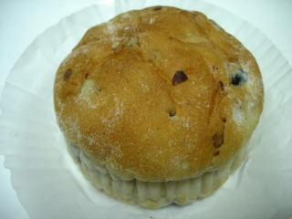
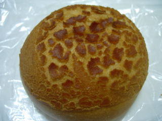
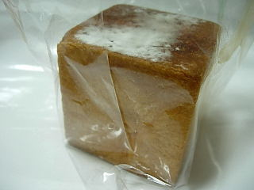
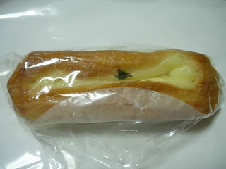
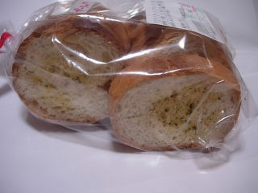
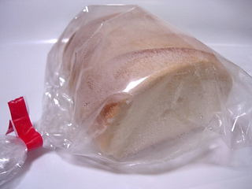
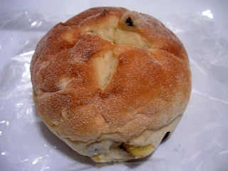

ベルクってなくなったんですね
2011/01/19
パラオの中にあったパン屋さんのベルクってなくなったんですね。
いつもお休みだなーって思っていましたが、パラオのホームを見たら店名が消されていました。
残念ですね。
ベルクさんはスーパーの「いしかわ」やホームセンターの「なんば」でも販売していたんですけど、そっちの再開もないかもしれないですね。
島根県出雲市今市町
2011/01/19
パラオの中にあったパン屋さんのベルクってなくなったんですね。
いつもお休みだなーって思っていましたが、パラオのホームを見たら店名が消されていました。
残念ですね。
ベルクさんはスーパーの「いしかわ」やホームセンターの「なんば」でも販売していたんですけど、そっちの再開もないかもしれないですね。
2010/07/18
見た感じ「ぜんざい」っぽくはなかったです。
美味しそうなパンです。

中にあんとお餅が入っていました。
生地にはくるみが入ってて、いい食感と味がありました。
色々入ったちょっと贅沢なアンパンだなあと思いました。
2010/04/24
チーズの入ったパンです。
こうゆうのってよく見ますよね。

定番っていうか、安心して買える商品ですね。
2009/7/4
スーパーいしかわ高岡店の中にある、ベルク高岡店でパンを買いました。
最近流行の生キャラメルの入ったパンですね。

似たような商品が色んな店で販売してますよね。ここのはクリームが沢山入ってて、キャラメル味がしっかり味わえました。

こっちはクリームチーズデニッシュです。
爽やかで軽いクリームのパンでした。今日はパンが1個110円だったので、お買い得でした。
2008/12/19
サクサク系じゃなくて、ちょっと固めのラスクで、フランスパンらしいラスクでした。

ガーリックの香りが強くするんですが、塩味はそんなに強くないので、ちょっとあっさりめでした。
塩が少ないのでパクパクと食べやすいんですが、気づいたら口の中がにんにく風味でいっぱいになってました。
2008/12/18
お米パンですが、原材料を見ると小麦も書いてあったので、パンよりの味かな？っと思ったんですが、お米パンらしい感じでした。

パンのキメが細かく、ギュっと詰まってて質量があり、ちょっと甘いパンでした。
パンに油風味が付いてて、ちょっと独特な味がしました。なんとなくカニパンに近い味かな？って思いました。（カニの格好をした、昔からあるパンです。）
2008/8/10
小さいブロック状のさつま芋と、レーズンの入ったぱんです。

お芋の甘さと、レーズンの甘さが味わえるお得なぱんですね。
意外とお芋とレーズンが喧嘩しなくて、ほんのりと甘くて美味しいぱんになってます。
今日ベルクは菓子パン110円だったのでとってもお得でした。
過去の記事
2008/8/9
ベルクのくるみチーズパン
2008/6/14
ベルクドリッテでパンのふるまい
2008/1/5
ベルクのみかんの里
2007/9/22
ベルクの牛すじカレードーナッツ
2006/2/11
ベルクの出雲ドームパン